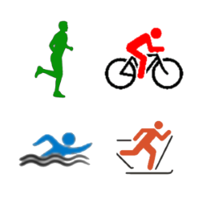

Willkommen auf der Support Site von
SportsLogger, IntervallLogger und Running Pacemaker
|  |  |
|||||
| Support Anfrage an SportsLogger... | Support Anfrage an IntervallLogger... | Support Anfrage an Running Pacemaker... |
Datenschutzerklärung
Die Apps verwenden die Positionsbestimmung um Informationen wie Standort, zurückgelegte Strecke, Geschwindigkeit und ggf. Höhe anzuzeigen.
Privacy policy
The apps are using location service to show location, way direction, speed and altitude.